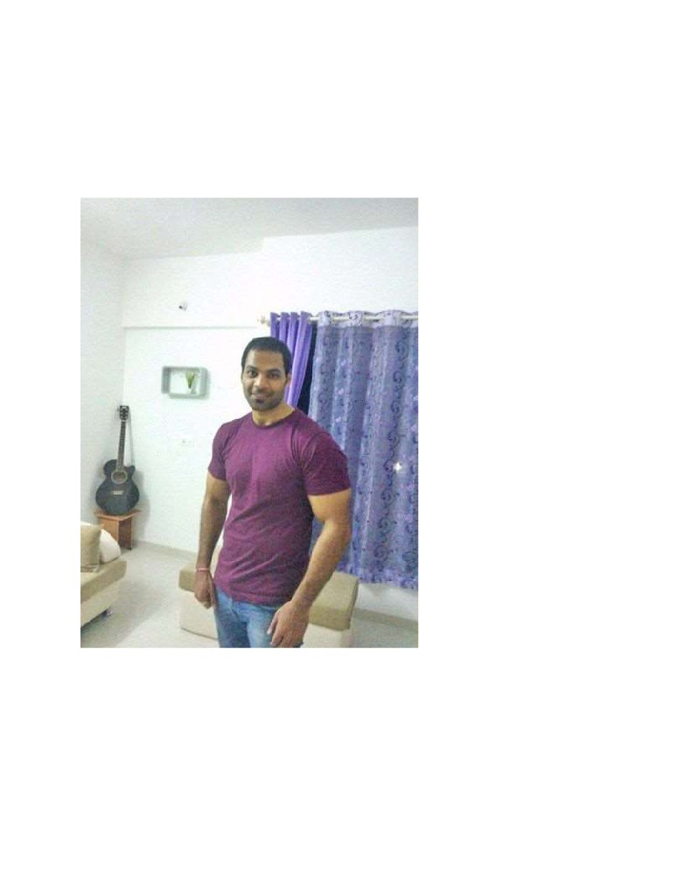
Get Shredded!
First of all, let me congratulate you͘ You wouldn’t have taken time to start reading it if you were not
ready to change͘ This shows you’re ready to begin your transformation journey͘
So without wasting time, let’s get started
Well this is me, 1 year back
And this is me now
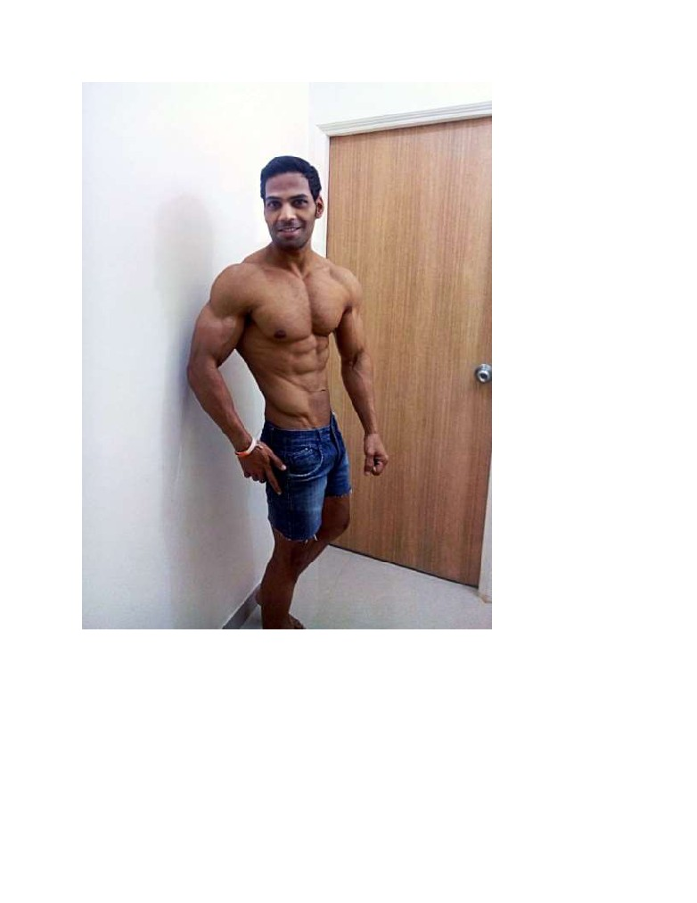
I have been working out for almost 6 years on and off based on what so called “experts” have been
telling me. However, after marriage, I put on a lot of weight! Happens right? Office stress and managing
house budget further deteriorated my condition. I was not able to go to the gym for almost a year,
resulting in all my muscle mass getting lost while the fat kept on increasing. However in November 2013,
after changing my stressful job, I started going back to gym again. I weighed around 84kgs with a bf of
around 16%. It was that time around, Kriss-3 was being promoted in India and there were posters of
Hritik everywhere making rounds and creating buzz. Aesthetics were in! I too wanted to get the chiseled
look and beach body which I could have throughout the year rather than bulking for months and then
again cutting back for months. I was tired of that shit.
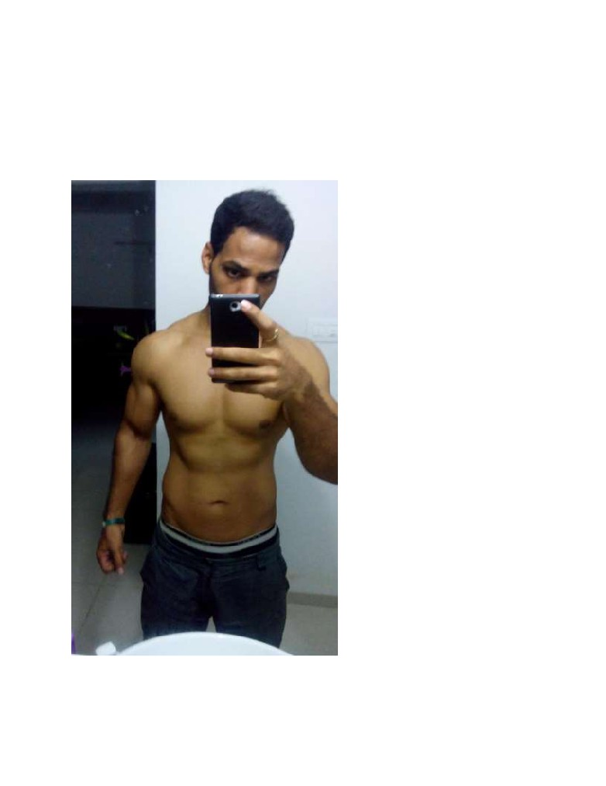
So I knew right then what I wanted, I had a target in mind, but I did not know how to reach there. I did
not have any mentor. All I knew were the common bodybuilding fundas that are prevalent for eg.
Creatine is not good, it hurts liver and that it causes bloat and water retention. Heavy weights for
gaining mass and light weight, more reps for cutting and all that bullshit. It worked for me so far why I
would even bother questioning it. I had a decent body. Using the same fundas, I knew I had to lean out
first to reduce my fat so I thought, let’s do cardio everyday along with weight training and I reduced my
calorie intake. After around 3 months, I looked like this
I was around 73kgs now, so I lost a total of 11kgs, for most people this would be amazing. For me, it was
complete bullshit! I checked my bf levels, they were only down by 2% so while I lost 11kgs of my weight,
I lost only 2% body fat͘ So then what exactly did I lose? Was it muscles? You’re god damn right! I lost a
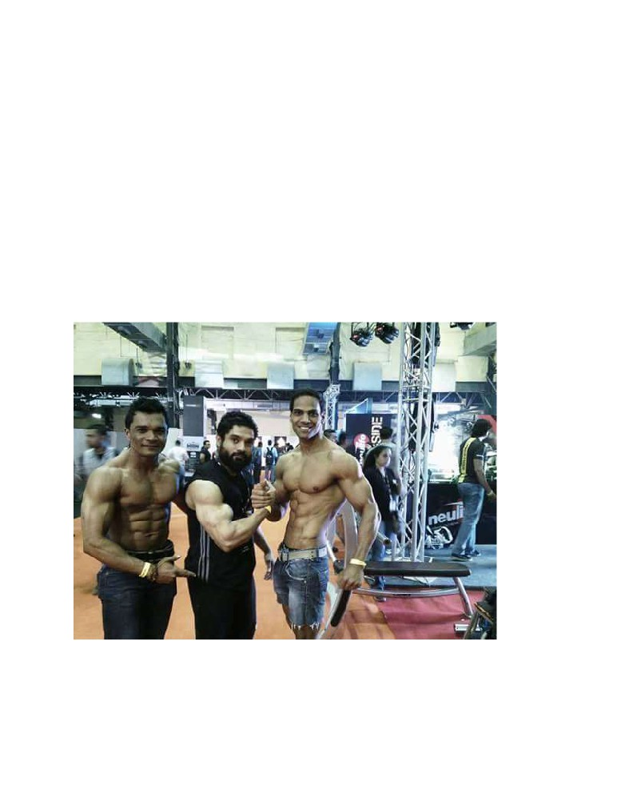
lot of muscles!!! And on top of that I screwed up my metabolism where I was barely consuming 1500
calories a day! Anything that I was eating was getting converted to fat and so I further reduced my
calories and it kept getting worse until I came across this bodybuilding.com article that changed my
entire perspective.
After that, all I did was read more and more. And when I did that I realized how much misinformation is
being prevalent in the current scenario͘ How these so called “experts” are screwing up an entire
generation of promising bodybuilders by giving them wrong information. They have to lie to you,
because they cannot tell you that they are injecting shitload of steroids in their ass and so they have to
make up things to make them sound authentic like oh man, I do so much workout, oh man I eat so much
food, oh I have naturally good genetics ! You know what? Bullshit!!!
This entire guide is about what my experience, my learnings and my journey from being at 14% bf to
currently at 4.6% body fat
This pic was taken at the recent bodypower expo held in Mumbai
Neither did I do anything stupid, nor was I dehydrated. They say the bodybuilders are very weak on the
day of the competition. Hey I did 39 strict pull-ups and a workout too.
But enough of me, let’s get to you͘
You have to understand, we’re not actors who roam around with their chefs cooking the high protein
meals! We don’t even have a lot of money to spend on all sorts of pre-workouts, fat-burners, casein,
hydro-whey and all that high end expensive stuff. I am a middle class husband and a father who works
for a software company. We have to do the best with whatever we have available in low budget.
Before beginning, please understand a few things very clearly
1. Bodybuilding is science͘ You’re getting results doing bullshit? good for you, please move on
2. To lose weight you have to take lesser calories than your BMR*, to gain weight you have to take
more calories than your BMR*
That’s it, there is no other way around these two things͘ Let science guide your transformation journey
not bro-science.
I figured the best way to tell you everything would be to start from the start. It will be boring initially as
its all science and stuff, but trust me, you’ll see almost 99% of the things are relevant͘ So please don’t
skip anything and if possible read again and again. Good luck!
Metabolism
Your body is like a car, it needs fuel to run. However unlike a petrol or diesel car, your body can use
multiple fuels. In simple words, the process, in which your body uses the fuel to provide energy to your
body is called Metabolism.
Food contains ingredients which your body can use as fuel. But even fuel is not yet energy! If I give you
fully charged battery, try using it to bake an egg. Having an energy containing fuel does not mean that it
is ready to use.
It all starts with food, and its metabolically active ingredients
-
Fat
-
Fiber
-
Long Carbs
-
Short carbs ( Sugar in other words)
-
Protein
Fat contain 9 calories (kilocalories per gram), Carbs and protein contain 4 calories. While fibers do not
yield any energy, they are extremely important in making digested food leave your body, they help in
digestion as well.
Now, what are these fuels that we’ve been talking about, so far we’ve only discussed the fuel sources͘
Let’s have a look
Your body can extract at least the following three kinds of fuel from what you ingest:
-
Fatty Acids
-
Glucose
-
Amino Acids
Fat -> fatty acids
Fibers -> used for excreting ingredients
Long carbohydrates -> shorter -> glucose
Shorter carbohydrates ('sugars') -> glucose
Proteins -> Amino acids
Now we know what the fuels are, it’s time to understand how they are stored in the body͘ Different
kinds of fuels are stored in different forms and different amount.
Fatty acids- Almost any cell can store fatty acids, they can also be transported directly in the
bloodstream - no conversion is needed. If it turns out that you do not have enough cells to store all
fatty acids, your body can easily generate special 'adipocytes', which put together form the so called
'adipose tissue'.
As can easily be observed, the body easily stores tens of kilos of fat. As each kilo of fat can power an
adult for many days, an average person will carry enough energy to survive for a month. An
overweight person often carries enough fuel to survive for months on end͘ But hey all this doesn’t
make fat bad. Just remember, you can survive without carbs, but without essential fats your brain
will stop working. So never ever ever cut down fat completely from your diet. You need around
40gms of essential fats everyday.
Glucose- Glucose is a very small molecule and easily travels from cell to cell. In this way it is easily
transported. This motility is not very well suited for actually storing sugars, so for storage sugars are
converted to glycogen. Glycogen is a molecule which consists of lots of smaller glucoses. This size
makes it easier to store.
As glycogen, sugar is stored in the liver and in muscles. Both liver and muscles can convert glucose
to glycogen. The liver can convert glycogen back to glucose but muscles can't. Muscles can however
use glycogen directly if needed, or release it into the bloodstream.
Very notable is the limited amount of sugars which can be stored. Ingested glucose and small
carbohydrates like table sugar travel nearly directly to the bloodstream. While this allows the body
to rapidly utilize ingested sugar, the amount of glucose allowable in blood is easily exceeded.
People of average weight will generally have in the order of 5 grams of glucose in their blood at any
one time. Levels above 10 grams are considered too high. This means that a regular candy bar,
which contains in the order of 30 grams of sugar, poses a great challenge to the body.
When glucose arrives in excess of 10 grams the body releases insulin which instructs the liver and
muscles to absorb glucose from the blood. Furthermore all parts of your body which can run on
glucose start doing so. The burning of fatty acids is reduced.
Beyond the bloodstream, the body can store a few hundred grams of glucose. Amounts differ with
body mass and bodily condition but is generally in the order of 150 grams. The glucose storage can
generally be depleted in a single day, making it a very short-term fuel.
Longer carbohydrates cannot transfer to the bloodstream and must be converted first, which can
take quite some time. It’s actually a good thing because it makes sure that the blood isn't flooded
with glucose, thus preventing any insulin spikes (Remember, insulin spikes are bad as they indicate
that your body does not need to burn fat)
Proteins and Amino acids- These abound throughout the body, either bunched up as proteins or
freely available. Can be converted into muscles or cells or lots of other things, which can also be
broken down again into proteins or even amino acids.
Proteins are broken down to amino acids in the intestine and then brought to the liver, where they
are partly reassembled and partly released into the bloodstream.
Compared to glucose, a lot of protein is available at any one time. The blood alone will contain in
the order of 100 grams.
Compared to either glucose or fatty acids, amino acids also have *huge* uses. It might be stated
that you ARE amino acids. They make up your DNA and mostly everything else that is interesting. I
find it somewhat revolting that the body actually burns amino acids!
I know it’s all so scientific stuff and you’re waiting to the part where all the goody good information
comes, but hang on, whatever good is going to come, will come out of this scientific information and
this information alone͘ So don’t do the mistake and keep reading
The actual energy
So, now you have the petrol in the storage tank, but can your car start just by that? No͘ you’ll have
to trigger the start button, the petrol will get combined with air and ignited in the combustion
chamber, resulting in a short burst of very powerful energy which will drive the pistons. In case of
body, this energy is called ATP (Adenosine Tri-Phosphate)
As said, your body stores its energy in the form of the three different fuels. To be used, these fuels
must be converted to ATP. This can be done in lots of places.
Glucose
Glucose, stored in the form of glycogen, can be converted into ATP by all cells containing
mitochondria, which means nearly all of them. Muscles can even burn glycogen directly.
Fatty acids
Much the same goes for fatty acids, with the very notable exception of the brain. Fatty acids cannot
cross the barrier into brain cells.
The brain uses loads and loads of energy which is a major challenge for your metabolism - the organ
which uses most energy prefers to run on the fuel that can be stored worst.
Fatty acids can be converted to ketones, which can partly power the brain.
Amino acids
Can be converted by the liver into glucose, or even into fatty acids
Almost everything can be converted to everything else by the body. But not always, and not
everywhere. Important conversions are:
From glucose to glycogen to stored fat
Mentioned earlier, this is done when your sugar intake has exceeded the storage capacity. This
happens a lot. Remember the insulin spike?
From stored fat to glucose
Creating glucose from non-glucose parts is called gluconeogenesis and is very important. It helps you
power the brain from long-term energy storage (fat).
Yes that’s all you need to know about fuels and storage, but hang on, the interesting stuff is yet to
come͘ Don’t you want to know where and how all this TP or energy is used in the body? And also
that why do you feel hungry even though your body has lot of stored fat in it?
Why do I Feel hungry?
Well, Energy is clearly spent when you do bodily work but as it turns out, the vast majority of work is
latent - it happens anyhow without you noticing it. This is called the Basic Metabolic Rate (BMR) and
it is a lot.
The body spends energy on pumping your blood around, for example. Every hour, about 80 liters of
blood pass through your kidneys which is a lot by any standard. Furthermore, the body needs to do
work to keep you warm enough. Then there is the brain, which always requires a lot of energy, even
when not thinking.
Actually doing things requires surprisingly little energy compared to the BMR. However, you can
easily raise your BMR by exercising - while the exercise itself does not really cost a lot of energy, the
bodily infrastructure created for it will. For 24 hours a day onwards
The body does not always expend energy the same way and in the same amounts. This has all to do
with strategy. This strategy appears to be a lot like a modern laptop: to go on as long as possible on
the available fuel. Such a strategy boils down to spending a lot of energy when it is abundant and
powering down in its (perceived) absence. It also means whining for more energy even when a lot is
available - like a laptop claiming that its battery has run out when in fact is has hours left.
The body appears to have quite an attitude. As mentioned before, most healthy adults carry enough
energy with them to survive at least a month. Most of us carry around more than that. While
'surviving' sounds big, it could probably be said that not eating for a whole week would not even tax
the prowess of our metabolism.
Yet after skipping lunch, you will probably feel starved by the time you eat dinner. How come? Well,
it's strategy. The body appears much attached to its energy stores. So attached that many of us
grow very overweight - and still we feel hungry after missing a meal!
Strategy in detail- The strategy employed governs how energy is spent and how it is ingested. The
latter part is easy. Whenever the body runs short of one kind of fuel, it sends unmistakable signals
that you should eat, even though it could also deal with the situation by conversion.
Regarding energy expenditure, the human body is generally described to be in any of three states:
fed, fasting or starved. 'Fed' starts sometime after eating and continues for a number of hours, after
which the metabolism is said to be 'fasting'. When awaking, the body is fasting. Which is why we
take 'break-fast'.
Starvation only occurs when eating does not occur for an extended period of time.
Now, when food has not arrived for a while, the body starts conserving energy. There are a lot of
ways to do so - lowering the body temperature a bit, neglecting body maintenance, slowing down
the brain etc.
We’ve been discussing food for so long now, aren’t you wondering where water comes into picture?
Role of water
Let’s discuss blood too, The blood serves as a medium for distributing fuel but it also works the
other way, in taking away stuff cells have discarded. If left uncleansed the bloodstream would
quickly become polluted. So there are at least three organs working on cleaning it up: two kidneys
and the liver.
The kidneys function primarily as sophisticated filters. As long as things are kept wet enough, they
are able to remove waste from the blood by osmosis. This waste may be treated further and is sent
to the bladder.
The liver is a lot more complex and actually converts a lot of waste products into usable substances
again. It can also break down molecules which cannot be filtered by the kidneys. Almost all energy
conversions taking place in your body are centered around the liver
As mentioned, the kidneys need water to function, they need to be wetter than your blood. If they
cease to be so, they become unable to filter the blood, leaving (part of) this job to the liver. The liver
then becomes occupied doing that and has less time or capacity left for conversions.
When this occurs the body may really become starved. The liver is unable to furnish the brain with
sugar and no other energy sources are available. This quickly leads to a dizzy feeling and general
incompetence.
Conclusions
This is the moment you’ve been waiting for- All the science is no good if we cannot put it to some
good use for our own benefit. Here are few things
-
If you take any more than 10gms of sugar, your body will trigger insulin which will further
indicate that body should stop burning fat. So stop eating Sugar! It’s literally poison for your
body!
In order to lose weight, we must make sure that the following conditions are met:
-
Energy intake is decreased and energy is used and not stored
-
Energy use must not diminished
-
Stored fuels are able to deliver the missing energy
The body is a simple container - to lose weight, more energy must be expended than is added. If
done wrong, eating less (for example by skipping breakfast) will actually gain you weight
-
Drinking plenty of water will actually allow liver to do the conversions and burn fat, so in a way
drinking more water does help burn fat
I have divided the book into three main parts, Nutrition, Training and supplements
I will discuss Nutrition first, then training followed by supplements in the order of their importance.
Nutrition
There are so many people who work very hard in the gym and yet they don’t get results͘ I’ll share my
personal experience with one of my client Pavan. When Pavan first came to me, he was working out for
two years and had an ok looking physique, stomach was flat though, and definition was lacking. He was
around 12% body fat with a muscle mass of around 41kg͘ fter 4 weeks of following my diet, he’s now
at 8% body fat and muscle mass of 43kgs and he can see his abs. what changed? Diet my friends, diet.
Most people would say its 50% training and 50% nutrition͘ I’d say its 80% nutrition and 20% training!
To start with you have to know your basal metabolic rate or your resting metabolism.
Calculating the BMR
First things first, you need to calculate your BMR, I hope you know why we’re doing this? If not please go
back and read it again͘ Here’s the formula
English BMR Formula
Women: BMR = 655 + ( 4.35 x weight in pounds ) + ( 4.7 x height in inches ) - ( 4.7 x age in years )
Men: BMR = 66 + ( 6.23 x weight in pounds ) + ( 12.7 x height in inches ) - ( 6.8 x age in year )
Metric BMR Formula
Women: BMR = 655 + ( 9.6 x weight in kilos ) + ( 1.8 x height in cm ) - ( 4.7 x age in years )
Men: BMR = 66 + ( 13.7 x weight in kilos ) + ( 5 x height in cm ) - ( 6.8 x age in years )
Alternatively if it’s looking too complex, you can do this on the following website
just enter your height, weight age and you’re good to go
Once you know your BMR, you can calculate your Daily Calorie Needs based on your activity level using
the Harris Benedict Equation
To determine your total daily calorie needs, multiply your BMR by the appropriate activity factor, as
follows:
If you are sedentary (little or no exercise): Calorie-Calculation = BMR x 1.2
If you are lightly active (light exercise/sports 1-3 days/week): Calorie-Calculation = BMR x 1.375
If you are moderately active (moderate exercise/sports 3-5 days/week): Calorie-Calculation = BMR x 1.55
If you are very active (hard exercise/sports 6-7 days a week): Calorie-Calculation = BMR x 1.725
Total Calorie Needs Example
If you are sedentary, multiply your BMR (1745) by 1.2 = 2094. This is the total number of calories you
need in order to maintain your current weight.
Once you know the number of calories needed to maintain your weight, you can easily calculate the
number of calories you need to eat in order to gain or lose weight
Since our goal is to get shredded, we’ll have to reduce our calorie intake. Those looking to gain weight
can follow the same routine, except that they have to increase their calorie intake above the BMR.
Remember, if you don’t count your calories, your results won’t be quantitative and you’ll have to rely on
hit and trail, so I suggest you do count your calories. Most of the food we consume has label indicating
both macro (protein, carbs, fiber and fat) and micronutrient content (Vitamins, minerals)
Now I’d be giving out my personal diet but what worked for me, might not necessarily be working for you.
You know the saying “give a man a fish, you feed him once, teach a man how to fish and you feed him for
a lifetime”. I am going to do the later. A lot of personal trainers and “Dieticians” are going to hate me
I will discuss the following diets. Ratios for the macronutrients (carbs, protein, fat) are mentioned in the
same order
Low carb (20:45:30) - This would be required to trim excess body fat, while making slow lean gains. it is
effective however takes a lot of time to show results (ideal for anyone who’s new)
Zone diet (40:30:30) - This would be required to build up lean muscle throughout the year. (For people
who are already muscular)
Depletion diet (Dynamic) - To reduce body fat % dramatically and bring definition to your muscles in
very short period (not for people with bf above 10%)
Keto diet (5:35:60) - Similar to Depletion diet, Keto diet will also target your bf levels dramatically. It
engages your body in producing more ketones (will discuss in the diet sections) hence the name, Keto
diet. It is an ideal diet to start with if your goal is fat loss.
I will also cover peak week and carb loading. In brief however since it’s a very complex subject and a lot
of research is still going on about it.
Warning: Depletion diet requires immense knowledge and understanding about body composition
and should only be attempted if you’re an advanced level athlete and are below 10% body fat. It
can screw up your metabolism if done wrong, not to mention causing muscle loss and hormonal
imbalance
Now most of the fat loss diets (which actually work) are based on 1 simple principal- reduced carb intake.
Consider the scenario.
You have a car, it has diesel in tank and in reserve. Now as long as there is enough diesel in the tank, the
car won’t burn the diesel in the reserve. Similar is the case with our bodies. Glucose (sugar, carbs) is the
fuel in the tank and fats are the reserve. You have to deplete your body of glucose (sugar, carbs) in order
to burn fat.
Before you start planning your diet, you have to calculate your BMR as mentioned before. Figure out
how many calories you’re going to consume to reach your target goal and then based on the diet, you
have to divide your macronutrients into ratios.
Remember, BMR only provides a baseline, many people have the metabolic rate above it or under it and
therefore BMR should not be considered a universal indicator of one’s metabolic rate͘
Low Carb Diet Since we’re looking to get shredded by low carb diet, our Fat: carbs: Protein ratio should
be 20:45:30. Of course there will be slight variation, but that is fine͘ It’s just to give you an idea and
stress on the fact that your carb intake will be the lower while protein intake will the highest, almost
double the amount of carbs.
To help you understand more efficiently, let me give you an example
I am 28 year old and 5’10 weighing 75 KG, after calculating my BMR (say 2000) I calculate my daily
calorie need using the Harris Benedict equation ( mentioned above) and my calorie intake comes to
about 2300 Cals a day considering I do light exercise( just an example)
Now to start losing weight (fat, not muscles) I will design my diet in such a way that I will have a macro
ratio of 20:45:30 in a calorie deficit mode
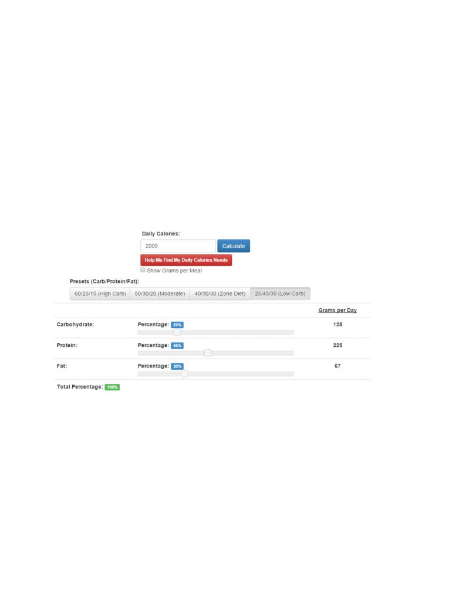
How many calorie you need to reduce? It’s up to you͘ However the body does not like dramatic changes͘
And it retaliates in a dramatic manner, leading to loose skin, water retention etc.( will address these
problems in later part). It’s better to lose weight gradually than dramatically͘ So I’d suggest a cut of 200-
300 calories in first couple of weeks to start noticing change. And then further down by 400-500 in
subsequent weeks to start fat loss and turn the body into a fat burning machine. You should never
reduce more than 1000 calories, as it would most probably screw up your metabolism.
Protein has 4, carb has 4 and fat has 9 calorie per gram.
So if I were to receive 2000 cals in a day, I will use the macro ratio of 20:45:30 to calculate my macro in
gms.
Here’s a website which can do the hard work for you
All you have to do is enter the calories and then select the ratio. You can enter ratio manually as well, in
my case I calculated using the above formula. I get the following
125gm carbs, 225gm protein and 67gm of fat.
Now it is tough to find food which has only protein or carb or fat alone. Most of the foods have a mix of
all. In this case you can look at the labels or use Google and a little bit of brain to find out what
combination will give you the above ratio
My personal Diet
I know you were waiting for this, so here you go.
I tend to keep things simple͘ For me the taste doesn’t matter as long am getting the desired results,
some people won’t be able to do that͘ I urge people to start a diet which they can sustain in long run
rather than copying from here and there for a short period and then giving up eventually after getting
frustrated.
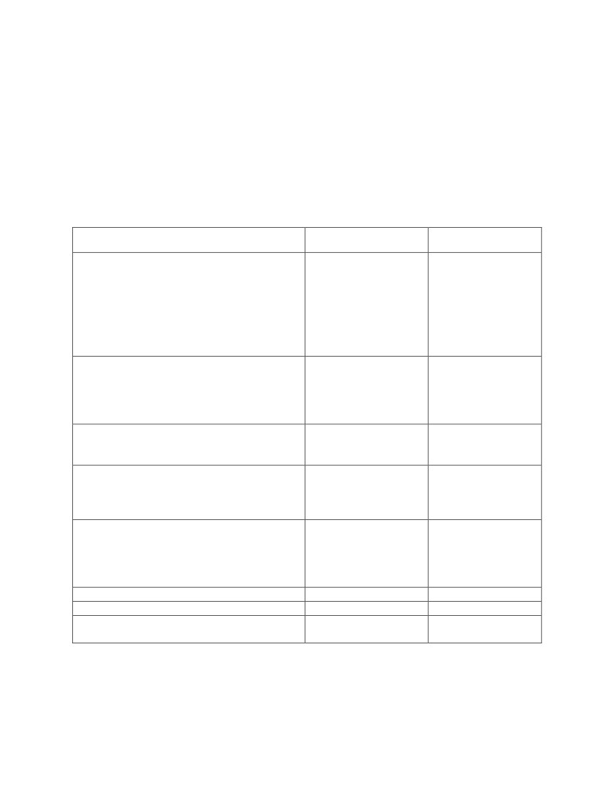
I use eggs as my staple for protein, chapatis, brown rice and oats for carbs, and nuts and flaxseed for
fats.
Keeping the same staple helps you in designing the diet, and playing around with it easily for eg if I have
to reduce my calorie intake instead of eating 4 chapatis I will eat 2, same for protein and fat. It gets
monotonic but don’t forget you cannot achieve something good sitting in your comfort zone, you have
to make attempts. And from my personal experience, it gets easier with time, setting a goal of course is
very important. In my case it was Hritik Roshan( huge fan !!!) I wanted a lean shredded body like him. I
am not quite there but a tiny winy progress in the same direction
Moving on, this is my diet for the entire day
Food
Calorie
Protein, carbs, Fat
Around 10 am
140+160+80=380 cals
Around 35gm protein,
1 scoop protein shake (30gm ultimate nutrition
20gm fat, 40gm carbs
Prostar)
1 small banana
40gm Saffola masala oats ( peppy tomato) + 1
tblspoon flaxseed
Around 2 pm
160+80+40+ = 280 cals
Around 40gm protein
8 egg white scramble
20 gm carbs, 5 gm fat
1 bowl spinach 200gm
Fat free curd 100gm
Around 6 pm
80 cals
20gm carbs
Half banana , 1 orange
Around 8 pm post workout
200 cals
50gm protein
2 scoops protein
25gm carbs
Around 10 pm
160+80+40= 280 cals
Around 40gm protein
8 scrambled eggs
20 gm carbs, 5 gm fat
1 bowl spinach 200gm
Fat free curd 100gm
12 pm 1 scoop protein( depends )
100 cals
25 gm protien
1 pm sleep
Total
1320 cals
190gm protein, 100gm
carbs, 30gm fat
You see the above diet is not perfect and is quite short of 2000 cals, this is where nuts and fruits come
into picture, peanuts and almonds in the right ratio throughout the day will make it a complete meal.
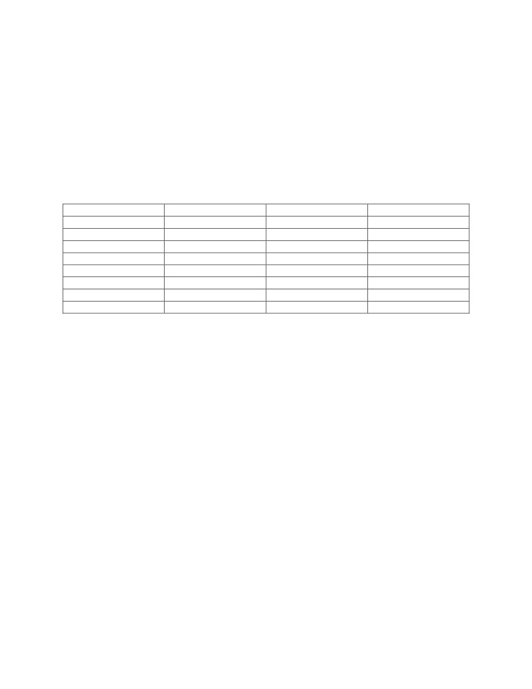
For eg. 100gms of peanuts will have 550 calories and around 50gms of fat, 25gms of protein and 50gms
of carbs, you do the math.
This is to give you an idea, like I mentioned earlier, the aim is to teach you how to catch the fish. Am
sure you can now design a diet plan for yourself.
A lot of people would want to know the reason for high amount of green vegetables in the diet. First
they are very less in carbs/calories and give you a feeling of fullness. Second, they provide you high
amount of dietary fiber which is required for proper digestion of your protein. So please do not ignore
fiber in your diet or it might lead to constipation or dehydration.
You can use the following table to select between your choices of staples
Protien
Carbs
Fats
Fiber
Chicken
Green vegetables
Paneer
Vegetables
Eggs
Fruits
Yogurt
Sprouts
Fish
Brown rice
Cheese
Fruits
Whey protein isolate
Legumes
Olive oil
Tofu
Sprouts
flaxseed
White mushrooms
banana
Fish oil
chickpeas
wheat
Nuts
White potato
Quinoa
Coconut
This is just a reference list (in no particular order) and you can find many more on the internet
Zone Diet- Just change the macro ratio in the above diet and make it 40:30:30 and it becomes your Zone
diet for lean muscle gains. You can introduce more carbs like oats, brown rice, sweet potato and so on. It
is always a good idea to consume carbs around the workout period and in the morning at breakfast
when your body needs them the most. That way you will have more energy and at the same time when
you’re resting you’ll be carb depleted and your body will be burning fat.
Depletion Diet
Warning: Doing a depletion diet without proper knowledge can lead to severe consequences
You’ve been warned͘ Depletion diet is no child’s play!
You will need iron will and a rock solid determination to complete two weeks of this diet. I would not
suggest extending it beyond that period for multiple reasons including but not limited to hormonal
damage, poor metabolism, and regaining weight. So if you do it, do it 100% right or not do it at all
It’s called a depletion diet because you tend to deplete your body of carbohydrates and sugars and
make fat as the only available option in the body compelling it to make the “Switch” thereby allowing
body to use fat as its primary fuel.
Once again, am not going to give you a magic formula, the idea is to teach you, help you understand
things so that you can design your own diet.
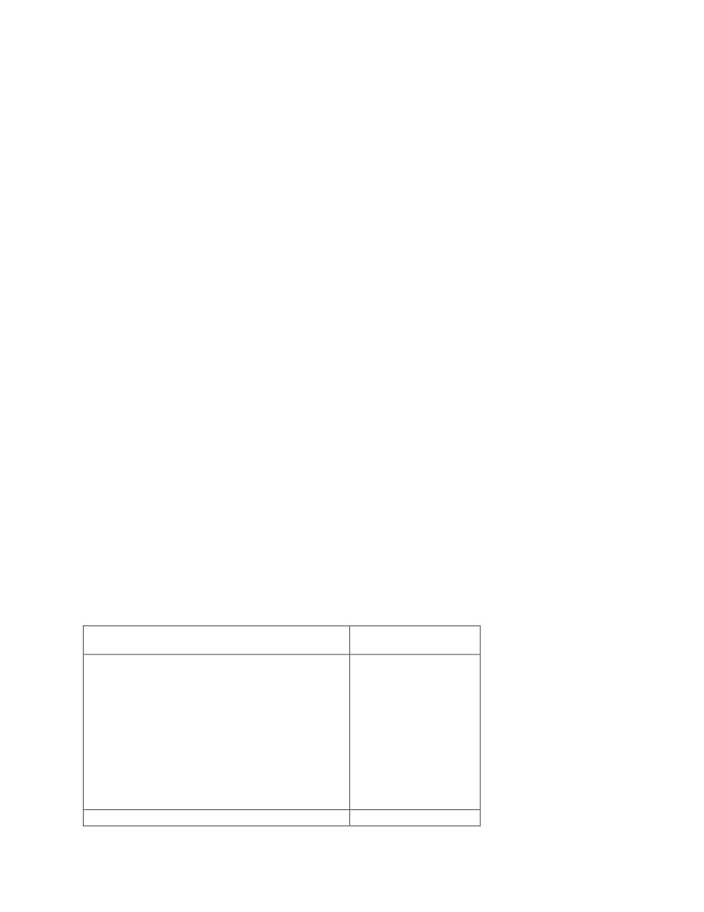
Now you need to understand a few things straight
Your body including your muscle tissues is 70% water!
Your muscles are not as big as you think. They appear big at any point of time as they are holding a lot of
glycogen and water in them. Generally a 100gm of your lean muscle tissue will hold up to 2gm of
glycogen, and each of this 2gm of glycogen will further associate itself with around 3gms of water
So if a bodybuilder has 30kg lean muscle tissue, i.e. 30,000gm of muscle tissue, the muscles will store up
to 600gm of glycogen which will further store 600*3= 1800gm of water͘ That’s 1͘8 kg of water͘ People
who start depletion diet often get confused when they see their weight dropping initially. It is this water
glycogen weight so even though there is no fat loss you can lose up to 2.5 -5kg of weight at the
beginning of the diet depending on your lean muscle tissue and water storage.
Feeling a bit disappointed? Don’t! It’s not a bad thing͘ You’ll know when you’ll do a contest preparation
and how this water and glycogen manipulation can make you stand out in the crowd.
But enough of that͘ Let’s get started͘
So now you know that fat loss is not as easy and to start seeing any results, you’ll have to completely
deplete your glycogen levels. And that my friends in the main idea behind any diet, be it Atkins diet, or
low carb diet.
What we’ll do is, gradually reduce the carb intake during the first week and then will reduce it further so
that our intake is less than 20gm per day, at all times, we’ll be supplementing with enough protein to
make sure muscle loss is minimum͘ nd don’t worry if you’re muscles appear flat, it’s because the
glycogen and water is going out. They will fill out once you’re back to your normal routine
Also, the initial few days of carb depletion will be very challenging as your body will struggle to adjust
with lower energy supplies͘ Remember at this point it won’t know that it can use fat as energy source.
However once your glycogen levels are completely depleted, you’ll experience, what is called “The
Switch” i͘e͘ your body will start using fat and you’ll feel tremendous surge in your energy levels͘ This
should happen typically during the second week. The key is to keep pushing through the first week.
Here’s a sample depletion diet which I use
Food
Note
1 scoop protein shake (30gm ultimate nutrition
During the first week
Prostar)
you can have brown
1 tbsp flaxseed
rice as a measure of
4 egg white omellete
your carbs and you
can gradually keep
reducing it say 100 gm
, then 80, then 60 and
so on and during the
second week , no
brown rice
Around 2 pm
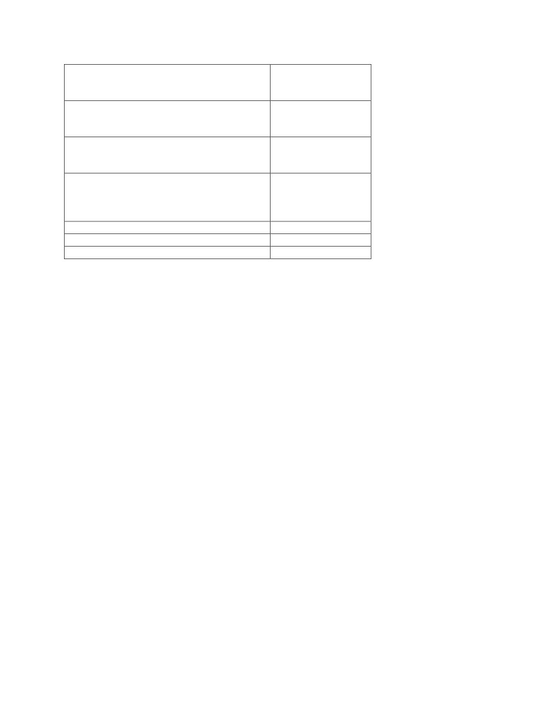
8 egg white scramble
1 bowl spinach 200gm
Around 6 pm
4 egg whites
Around 8 pm post workout
2 scoops protein
Around 10 pm
8 scrambled eggs
1 bowl spinach 200gm
12 pm 1 scoop protein( depends )
1 pm sleep
This is what I personally use, if you compare this with my normal diet (earlier chapters) you’ll notice that
I have eliminated all source of carbs here except spinach (for we need dietary fiber at all times and the
carbs in vegetables can be ignored). This is not the best diet I agree neither is it properly balanced, but
hey it works for me plus it’s just to give you an idea͘ Now that you know the concept am sure you can
come up with diet which looks better with other vegetables and protein sources in it
lso to be kept in mind is that fact that you’ll have to drink more water than usual, since your muscles
will lose glycogen and thus water, you’ll continuously need to drink water to keep them hydrated͘
Let’s move on to another very important diet, The Keto diet
Keto is basically a diet where you’ll have absolutely minimum carbs say 20-30gms max. This will force
the body to utilize fat as a primary source of fuel thereby aiding fat loss. Remember the car and the fuel
example? There are different versions and ways of doing Keto͘ One that’s worth noting is the tkin’s
version. In this version of Keto, you basically eat fat to burn fat. This is particularly good for people who
want to get shredded and at the same time keep their muscles intact as Keto is muscle sparing. I will
discuss the Atkins version of the Keto here in this guide and lay out a sample diet plan as well
For Atkins, I’d normally use the 5:35:60 macro ratio i͘e͘ 5 portions of Carbs, 35 portions of protein and
60 portions of Fat.
If you know your BMR, you can calculate your macro breakdown from
Let’s take an example͘ Say my BMR is around 1500 and my DEE( daily energy expenditure is 2000) my
macros for Keto will come to as
25gm of carbs, 200gms of protein, and 122gms of fat
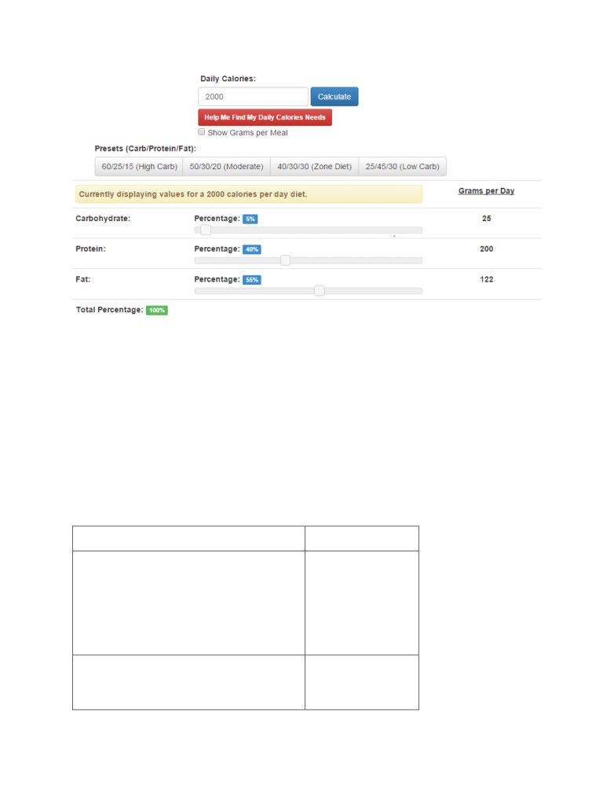
Now let’s try and build a sample diet around this͘ Like I’ve mentioned earlier, I like to keep things simple
and hence I use food that I use daily and is easily available
For Atkins, following are the best choices for me
Paneer ( per 100gm -- fat 20gm, protein ~20gm, carb 1.5gm)
Amul cheese (1 slice-- fat 5gm, ~protein 4gm, carbs -negligible)
Extra virgin coconut oil ( per 100gm--fat 86gm)
Flaxseed( per 100gm—fat 42gm, ~protein 18gm, carbs 29gm)
Spinach (or any other dark green vegetables for fibre)
A sample diet would look something like this
Food
Note
Around 8 am
Breakfast 50gm paneer
1 cheese slice
4 egg whites
Around 11 am
50gm paneer
1 cheese slice
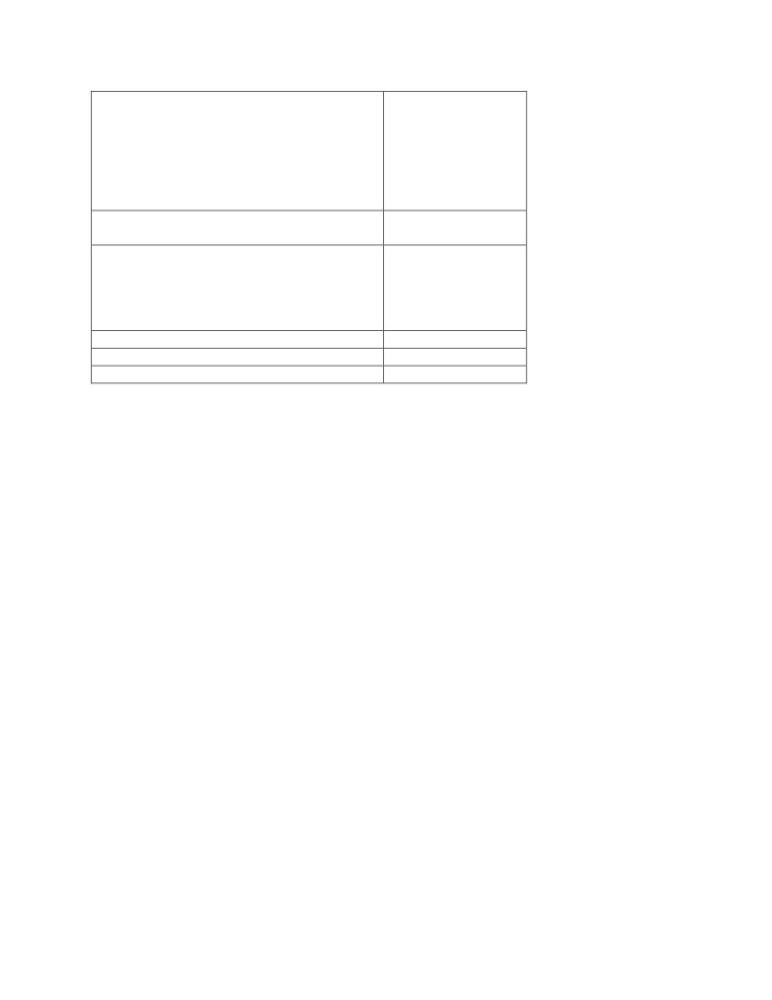
1 pm lunch
100gm paneer
1 bowl of spinach or any of your favorite
vegetable
Snacks, paneer cubes sauted in extra virgin
coconut oil
Dinner 9 pm
100gm paneer
1 bowl of spinach or any of your favorite
vegetable
Now this is just an approx. information and the diet will vary from individual to individual, let me remind
you again that this information is to help you understand how you make a diet plan and not to give you
a readymade plan.
Ketosis within your body will start typically 2-3 days after you start this diet and you will start seeing
quick results. You can actually get a urine test done to see if your body is producing more ketones than
usual.
Most important thing is that you have to, am stressing it again, you have to keep off carbs completely.
Carbs can completely reverse the effect of this diet.
Also if you lose 1-2 kgs in initial 2-3 days, don’t start jumping, like I mentioned, it would be your water
weight associated with the glycogen that will be depleted. Nonetheless, you can lose upto 4-5 kgs in 4
weeks of this diet
Important- A lot of people say reefed should be done every week, however from personal client
experience, I’ve noticed that body gets smooth and retains a lot of water. It is a good idea to stay on
keto for atleast 4 weeks continuously before reefed.
Also sometimes, people start consuming more protein thinking it will help, however it only works
inversely in this case. You see body rather than using stored fat, starts using Aminos from this extra
protein and converts it into glucose and we know what happens then? No more ketosis. So avoid large
protein intake and stick to the ratio͘ You won’t lose any muscles!!!
Peak week and contest prep
This is just for information.
Remember when I said that during initial period of carb depletion, your body only loses water weight?
nd how it was not a bad thing͘ Now I’ll explain how͘ See once your muscles are depleted of glycogen
and water, they have a tendency to store more glycogen. If during normal state your muscles stored
2gm of glycogen per 100gm of lean muscle tissue, after depletion it can store up to 4gm of glycogen and
hence more water. Bodybuilder and athletes take advantage of this situation. Following a depletion diet,
they start carb loading, which lets them appear fuller and huge on stage and all the carb will get used up
to fill increased glycogen levels. Also a lot of subcutaneous (under the skin) water will be pulled into the
muscles giving a dry and ripped look. However this only works for people who are below a body fat% of
10 or less, as it won’t make a difference if you have more fat mass͘
Dieting roadmap
Most of the people after reading this would like to start dieting without any clue as to what they will do
once it’s over͘ Shall they repeat the dieting or go back to their old habits͘ That’s why I have included this
section.
Detox- detox is the process of getting all toxins out of your body, it is a good idea to do a detox before
starting any diet so as to get maximum benefits out of it from day -1. You can do a detox for 1-3 days.
It’s simple, keep your protein intake 1gm per pound of your body weight and replace other macros with
fruits and vegetables.
Dieting strategy Everyone wants to get muscles, but you have to decide for yourself, do you want to
look like a freak show or aesthetic? If the answer is later then you should follow this guideline
-
If you can see your abs, you can start with low carb diet initially for 4 weeks and then continue
on zone diet for as long as you want
-
If can’t see your abs but are already fit, start with Keto for 6 weeks and try to get your body fat
below 10% so that you can see your abs, phase out slowly, change to low carb for another 4-6
weeks till you’re shredded enough and then stick to zone diet for as long as you want
-
If you’re extremely fat, you should 100% do a detox and start with Keto and stick with it for
atleast 6 weeks, slowly phase out, eat normal food for a week or two but within your allowed
calorie intake and then start another session of keto for 6 weeks. You can continue till you
achieve your desired weight. However important thing is to keep a gap between dieting periods.
-
If you have heart diseases of problems with high cholesterol, Keto would not be an ideal option.
Don’t keep reducing the calories- most people if they don’t get results, keep on reducing calories further
and further, this is not good͘ What you’re doing is you’re screwing up your metabolism, this is true for
most people who tend to lose weight by doing a starvation or crash diet. And they gain the weight back
again very soon.
If you do the above mentioned diets correctly, you’d see that your metabolism will only increase and
you’ll keep losing weight despite higher calorie intake however you should be regularly lifting heavy
weights as well
Remember, the more muscles you have, the more fat body will burn, even while resting so focus on
building muscles
Training
If I were to get a dollar every time someone asked whether they should go for heavy weight, less reps or
light weight, more reps, I’d probably be a millionaire͘ NOT!
But hey, a lot of people did ask me and it’s a genuine question too͘ Unfortunately there’s no simple
answer. I am going to explain how it all works and then maybe you can figure out what would work
better for you͘ I’ll also tell you my personal training regime and how it was better than others
There are a lot of factors that matter when it comes to building muscles ranging from body type to
genetics and what not. Different type of sports would require you to have different bodies, however
since we’re into muscle building, I’ll only discuss training which will be relevant
Starting with body type, we have three major classifications
Ectomorph n ectomorph is a typical skinny guy͘ Ecto’s have a light build with small joints and lean
muscle͘ Usually ectomorph’s have long thin limbs with stringy muscles͘ Shoulders tend to be thin with
little width
Mesomorph- A mesomorph has a large bone structure, large muscles and a naturally athletic physique.
Mesomorphs are the best body type for bodybuilding. They find it quite easy to gain and lose weight.
They are naturally strong which is, the perfect platform for building muscle
Endomorph- The endomorph body type is solid and generally soft. Endomorphs gain fat very easily.
Endo’s are usually of a shorter build with thick arms and legs͘ Muscles are strong, especially the upper
legs. Endomorphs find they are naturally strong in leg exercises like the squat.
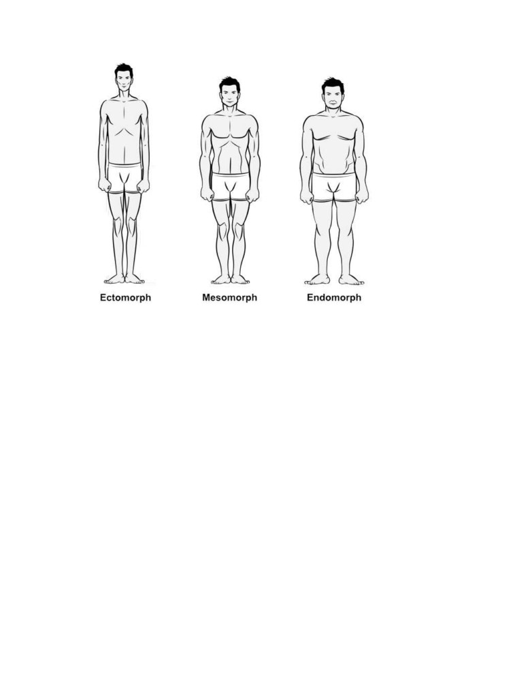
Now don’t be disappointed if you’re an ectomorph or endomorph, I am an endomorph, just saying!
Yeah so endo ecto bla bla bla, who cares, where’s my workout routine??
Well old your horses Leonidas, we’re getting there͘ It’s important to understand a few things before you
go there.
Since your primary goal is to build muscles, you need to understand them first. The following chart
shows an overview of different types of muscles in the body
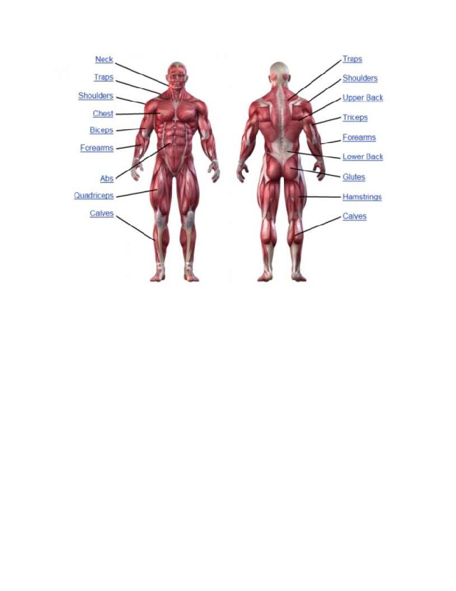
Now the muscles are not all the same size, and may require different types of stimulus to get stronger
and developed. You cannot keep doing squats and expect to get a good chest- I know you know this and
this is not what am trying to say, what am trying to say is that the weight, the repetitions, the intensity
and the form, all these are the factors that play an important part in giving the proper stimulus to any
muscle group. So if you were going to ask should I lift heavy weight and do less reps or lift light weight
and do more reps, read what I just said again. There is no single answer and no single size fits all.
Different athletes in the history of bodybuilding have showed and proved that you can build a great
body by following different methods. Frank Zane (3 time Mr. Olympia) use to believe in lifting smaller
weights and doing more repetition while more recent bodybuilders like Jay Cutler , Phil Heath and so on
are proponents of lifting heavily. The article written below becomes all the more important now, read it
to find why.
Muscle fiber types (taken from bodybuilding.com)
Your muscles are made of two different types of fibers. Knowing your personal muscle fiber make-up
can be an invaluable aid when it comes to properly targeting your training program. If you're working
your muscles in the wrong way, you'll be cheating yourself out of hard-earned results.
Every muscle in your body is made up of a bundle of small fibers. In each bundle, you have two main
types of fibers: slow twitch and fast twitch
Slow Twitch:
These are also known as Type 1 or red muscle fibers. They are responsible for long-duration, low
intensity activity such as walking or any other aerobic activity.
Fast Twitch:
These are known as Type 2 or white muscle fibers (divided further into A and B). They are responsible
for short-duration, high intensity activity. Type 2B fibers are built for explosive, very short-duration
activity such as Olympic lifts. Type 2A fibers are designed for short-to- moderate duration, moderate-to-
high intensity work, as is seen in most weight training activities.
By looking at elite athletes in different sports, you can see extreme examples of each make-up of muscle
fiber. At the slow twitch end is the endurance athlete, such as the marathon runner.
These athletes can have up to 80% or more of slow twitch muscle fibers in their bodies, making them
extremely efficient over long distances. At the fast twitch end is the sprinter. World-class sprinters can
have up to 80% or more of fast twitch muscle fibers in their body, making them extremely fast, strong
and powerful but with limited endurance
How To Train Your Muscle Fiber Type
When you're training with weights, your goal is to work as many muscle fibers as possible. Affecting
more muscle fibers means greater gains in strength and muscle mass.
If your fibers in a particular muscle consist primarily of slow twitch fibers, in order to affect the greatest
number of those muscle fibers, you'll need to train that muscle with higher reps, shorter rest periods
and higher volume. This is because they take longer to fatigue, they recover quickly and they require
more work to maximize growth.
Unfortunately, slow twitch muscle fibers are limited in their potential for growth so even if a muscle
group is primarily slow twitch, you should definitely include some lower rep training to maximize the
fast twitch fibers you've got in that muscle.
If you find you have a hard time gaining size in a particular muscle, it could be because it has a
predominance of slow twitch muscle fibers. Higher reps (e.g. 12 to 15 reps), higher volume (more sets)
and shorter rest periods (30 seconds to a minute between sets) can help you to maximize those muscles.
This doesn't mean you should use light weight, though. You should still strive to use weights that are as
heavy as possible that will cause you to reach failure in those higher rep ranges. If you don't use heavy
weights, you won't give your muscles a reason to grow.
If your fibers in a particular muscle group consist primarily of fast twitch muscle fibers, you're one of the
lucky ones. You'll have a much easier time building mass in that muscle - fast twitch muscle fibers have
greater potential for size than slow twitch. The more fast twitch fibers you've got, the greater your
ultimate muscle size can be. These muscles are most likely your strongest and quickest to develop.
To maximize your muscles with fast twitch fibers, you'll need to train with low to moderate reps (e.g. 4
to 8 reps), rest periods of around 1 to 2 minutes and a moderate training volume (too much volume will
compromise recovery).
If your muscles have a fairly even mix of fibers, you can evenly divide your training between focusing on
the lower-rep, fast twitch fiber training and the higher-rep, slow twitch fiber training. This will help you
to develop all the fibers in your muscles, maximizing your ultimate development.
Time under tension or T.U.T - You’ve read the above article however science says that irrespective of
the weights, your muscles develop when they are put under tension for certain duration which crosses
your muscles threshold. For eg. You can lift a 20 kg dumbbell and do 5-8 reps or you can hold a 10 kg
dumbbell facing upwards and hold it for a minute. So which one is difficult? Which one will give you
more benefit? The light weight or the heavy? As both the weights will put your bicep muscle under
immense tension for a certain duration. Food for thought! Next time someone asks you in the gym to lift
the heaviest possible weight, ask them to hold the smallest possible weight against gravity for a certain
duration ;)
Now that you don’t care about lifting heavy or light, let’s move on to some personal tips from my own
experience. For me it’s a mix of heavy and light weights. I will do a heavy weight session at 4-6 rep range
followed with a light weight (not as light as you might be thinking ;)) session at 8-10 rep range alternate
weeks.
-
Do more supersets, in which you start by lifting heavy, however end with lifting smaller weights
till you can’t do any more
-
Personally, I’d do more inclined chest press as it will build your overall chest
-
Volume is the key. Instead of doing 4 sets of 12-15 reps, try doing 6-8 sets of 4-6 reps
-
Form is everything, try to retract your shoulder blades, when doing chest press, this will
minimize the load on your shoulders and maximize the load on your chest
-
Follow a 1 :3 approach, 1 second to pick the weight up and 3 seconds to bring it down slowly
-
Do it slow and do it with proper form
-
Use dumbbells wherever possible instead of barbells
-
Weighted pull-ups is one of the best exercises, do it every day, even if you’re able to do one, do
it with strict form
-
With back, its mostly pull, so you have to lift heavy enough weights
-
Try to avoid exercises which could hurt your neck, Lat pull down behind neck is a big no no
-
Use compound movements
-
Focus on your negatives and try to hold the weight, feel it
-
Do heavy lifting not ego lifting
-
Don’t train larger muscle group more than once a week, they need more time to recover and
hence to grow, like quads
-
Don’t overlook calves and hamstrings, you’re going to get lot of negativity if you don’t focus on
them especially calves
These are a few things I could remember at the moment, there are many more and I’d try to add
them in the upcoming versions
Also since cardio is a big thing among gym goers, let me cover that too
Cardio- Cardiovascular exercises or cardio are basically any exercises that can raise your heart beat.
They are important for your overall cardiovascular health i.e your heart and your respiratory system.
Cycling, running on treadmill, or cross-fit trainer are a few examples of cardio. Cardio can be done
once or multiple times throughout the week, however doing cardio for weight loss is not a suitable
option for multiple reasons. Rather change your diet.
Research have shown doing regular cardio can significantly improve your cardiovascular health,
however it should not be used for dropping inches off your body. From my personal experience,
weight training is the best way to do it. Also fat loss like we discussed is a matter of calories in vs
calories out. So revisit your diet.
HIIT Vs steady state cardio- HIIT or high intensity interval training is basically a training split in which
your resting periods are smaller. An example would be to run on treadmill for 2 minutes at 15kmph
and then taking a gap of 1 minutes and then running again. HIIT assists in gaining muscles and is
shown to increase your metabolism over 24 hours of period. HIIT is fueled by both glycogen and fat
and will not target fat immediately. Some researchers have proved however that doing HIIT will help
you reduce more overall calories in shorter amount of time then steady state cardio thereby more
total fat calories͘ My opinion?? HIIT is badass and does what it claims͘ However it’s pretty
exhaustive!
Steady state cardio - is cardio done in 70-75% of your maximum heart beat range. It taps your fat
for energy and is very effective for dropping the last few pounds before a show. However it works
only fine for people with already less bodyfat. You can still do it for overall good cardiovascular
health however don’t expect magic!
If you’re overweight and you’re running on treadmill, you’re literally wasting your time. Use cardio
only for improving your cardio vascular health. For results, weights should be your choice. You are ot
going to build any muscle while on cardio and do remember the more muscles you have, the more
fat you burn even while you’re resting so decide.
If you’re looking for a personal training regimen, I’d suggest downloading Bodyspace app, it’s a free
app from bodybuilding.com and has more than 40000 training programs. I personally follow hivt(
high intensity volume training) and it has given me good results so far, also I try to keep my rep
range between 6-8
I provide group training too, charge is 500 rupee for 3 months for whatsapp training (that’s what
we have right now). It’ll be mostly things which I’ve covered in the doc. So suit yourself.
Supplementation.
There are n number of supplements available in the market these days let it be L-Carnitine, HMB,
CL , NO products and so on and if you start buying them all, you’ll probably have money left in your
pocket. See these products work, they have years of solid research backing up their claims, but who
has the money right? Remember what I said in the beginning? We’re middle class people and our
budgets are tight so we have to manage with what we have. So instead of getting into all these high
end products, I’ll cover the most basic and most essential supplements
Protein- Not going to discuss this! You need this no matter how good your diet is, don’t fall for
expensive isolates though, blends are good too͘ Some of the good brands I can tell are ON’s gold
standard 100% whey, Ultimate nutrition Prostar 100% whey, BSN Syntha-6. There are many others
however I found these pretty good. Prostar is one of the cheapest and has the best protein ratio.
These days am using Muscleblaze’s 100% whey͘ It’s a new Indian brand, actually its healthkart’s in-
house brand͘ Has really good supplements, and by far they are the cheapest͘ I’d recommend them
completely
Creatine- When lifting heavy weights, your body primarily uses ATP and CP (Creatine phosphate)
stores, however these are very limited you cannot push any further until body makes more ATP
from glycogen again. Also most of this ATP, actually exists in the body in the form of ADP (adenosine
di-phosphate). When Creatine monohydrate is introduced in the body, it binds to the phosphorus
inside the body and exists as Creatine phosphate. Now this Creatine phosphate during heavy
workouts gives its phosphate to ADP to form ATP, this happens much faster than glycogen to ATP
conversion thereby there’s a notable increase in your strength. Creatine is one of the best legal
product available in the market and should be used by anyone who lifts weight at the gym
Now there’s a common myth among bodybuilding community, that Creatine retains water. So let’s
address that. First of all what do you mean by water retention? The water is stored in your muscle
cells as well as outside of your muscle cells under the skin. This extracellular water stored under the
skin is called water retention. It’s a defense mechanism employed by the body to keep you hydrated
all the time.
Now Creatine draws water directly into the muscles and not into the extracellular skin, which is a
good thing. Tell them to the experts and they’ll be rolling their eyes now. Most of the times these
people stop drinking water all together, stop eating sodium as well. Now sodium is one major
electrolyte that helps in regulation of water in the body. So when body detects low levels of sodium
and water, the hormone aldosterone is triggered, which further as a part of body’s defense
mechanism tries to hang onto the water, thereby causing water retention intracellular as well as
extracellular. And people thought it was due to Creatine.
L-Glutamine- or commonly referred to as glutamine is one of the most abundant amino acid in the
body. Glutamine can be found inside muscle tissues, and nearly all dairy and meat. Although its
produced abundantly in the body, it’s not enough for superior athletes. It’s important as it’s
involved in protein synthesis and recovery. But that’s just not it, there's far more to it than that.
Glutamine significantly affects BCAA metabolism, gut barrier maintenance, normal immune
function, glucose formation, water transport, neurotransmission, thereby making it a little more
important. It also shortens your recovery period and may reduce soreness (DOMS- delayed onset
muscle soreness) as well
BCAA- BCAA or branched chain amino acids are basically essential Amino acids which are
synthesized in the body namely Leucine, Isoleucine and Valine along with many other amino acids.
However what makes these BCAA’s more important is the role they play. See these amino acids are
being used by the body for energy when you’re lifting heavy weights. And if body starts making
these amino acids it will not manufacture other amino acids at the same speed. And we know that
all the amino acids are required for building proteins which are nothing but chains of amino acids.
So it is always a good idea to supplement these essential amino acids, thereby giving body enough
time to make all other amino acids, further leading to more muscle protein synthesis.
Micronutrients- You may not realize this but if your diet doesn’t have chromium in it, you will suffer
poor metabolism. How? Let me explain, even though chromium is required in micrograms, it is an
essential cofactor for proper functioning of your hormone insulin. And you know how important
insulin is. Anyways it was just an example showing how important these micronutrients in your body
can be. There are a total of more than 26 such vitamins and minerals that are required for optimum
health by your body every day. Unfortunately there is no single food that will provide you the full
spectrum, hence supplementation becomes all the more essential. Multivitamins and minerals tabs
can do that for you. Having a balanced diet can take care of most of the micronutrients however
supplementation of the following is always beneficial and is even recommended
Vitamin C, any good liver tonic or tabs for optimum liver health, Calcium, Vitamin -B ( thiamin,
riboflavin, niacin, and so on), Glucosamine Sulphate and glucosamine chondroitin (for joints)
So finally your supplementation stack should look something like this
Protein (breakfast, pre and post workout)
Glutamine ( pre or post workout)
Creatine (pre or post workout)
BCAA (intra- workout)
Multivitamin (after breakfast)
Calcium ( after breakfast)
Glucosamine S+C ( after breakfast)
Vitamin -b, Becosules (after breakfast)
Liv52, Himalaya (after workout)
Don’t forget fish oil capsules or flaxseed oil for omega-3 and omega-6 fatty acids. Remember they are
required by your brain. Oh and Fenugreek extracts or “Methi extracts” are natural test boosters. So it
wouldn’t hurt adding some methi seeds in your daily diet. Similarly, garlic is very beneficial herbs that
help fat loss as well as reducing free radicals in the body. It work as natural antioxidant.
If you can afford, you can use
l-Cartinine- for increased fat loss
ZMA - for overall good health and deep sleep
The list goes on, I’d suggest stick with the basics. Try to explore more herbs and checkout their benefits,
a fish oil capsule will cost you more but flaxseed you can get for 140rs/kg in the market. Read more, use
logic and question everything that’s happening. That’s the only way you’ll benefit your body as well as
people around you.
I hope this small piece of booklet gave you enough information to start with. Once again I do provide
group training at a very nominal charge of rupees 500 for 3 months. If someone is unable to give 500
rupee, I provide it for free as well. Feel free to share this booklet among your friends and family as well.
Remember, Fitness is your right, but you have to earn it!
Cheers !
JC
Main References.
Sports nutrition, ISSA 3rd edition